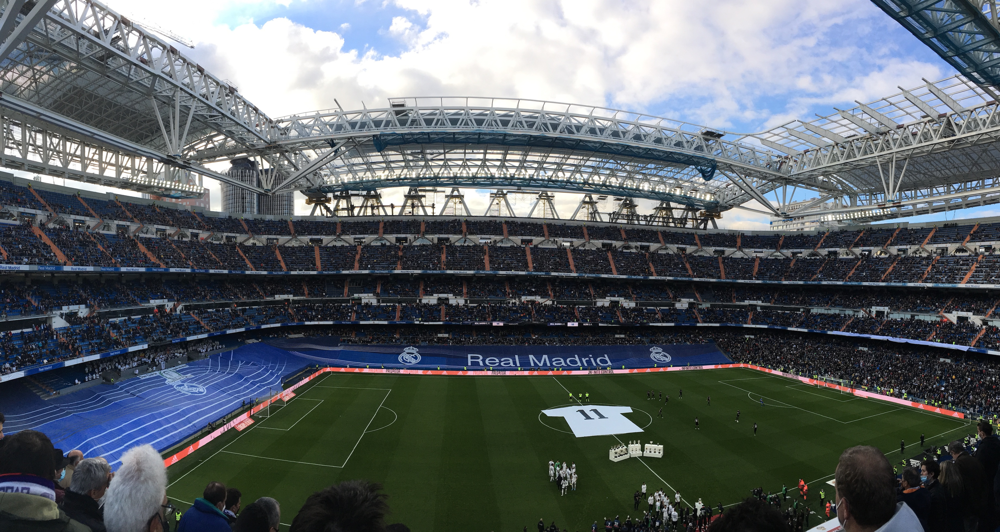

Madrid leden 2022

Už delší dobu jsme se s Kubou bavili o tom, že bychom mohli po vzoru výletu do Barcelony zase sbalit naše příruční zavazadla a vyrazit někam za sportem. Vysněné destinace byly jasné - Anglie a Madrid. Zároveň jsme se shodli na tom, že pokud už někam pojedeme, bylo by dobré zkusit najít víkend, kdy se v dané lokalitě bude hrát více než jedno utkání. A protože COVIDová opatření byla touto dobou v Anglii dost přísná, výběr se relativně rychle omezil pouze na hlavní město Španělska.
Oba jsme věděli o tom, že ideálním termínem pro náš trip bude třetí víkend v lednu. V sobotu hraje Atlético a v neděli zase Real. Kde by mohl být problém? Pro mě osobně to byly finance. Kombinace Vánoc, nového auta a jiných dovolených si vybrala svoji daň. A to nemluvím o dani z příjmu fyzických osob, která přijde na jaře. Mně osobně se tedy nechtělo takhle rychle zase utrácet další peníze, a tak jsem tento výlet moc netlačil.
To se ale změnilo v pondělí. Když na mě vyskočila akční nabídka na letenky do Madridu, přišlo mi, že mi osud naznačuje, že tahle příležitost se taky nemusí opakovat. Vypadalo to, že všechno sedí. Proto jsem se docela rychle pro výlet nadchnul, zvedl jsem telefon a zavolal Kubovi, zda do toho jdeme. Jinou odpověď než “ano” jsem upřímně nečekal. Kuba je prostě klasický Yes man, který žádný výlet za kvalitním fotbalem neodmítá. Dalším takovým Yes manem je Alberta. Naše parta byla tedy kompletní a mohlo se vyrazit.
DEN 0
Vlak do Vídně nám odjížděl v 8:48, sraz na nádraží jsme měli v 8:30. Když jsem se tedy vzbudil v 6:30, pořád jsem si říkal, že mám hodně času. Jak to tak ale většinou bývá, když má člověk hodně času, nakonec jsem vůbec nestíhal, a tak jsem musel celou cestu z domu na šalinu běžet. Úplně propocený jsem dorazil na nádraží, kde už mě čekal zbytek mojí crew. Možná jsem měl jazyk na vestě, ale taky jsem se usmíval od ucha k uchu, protože jsem je rád viděl a upřímně jsem se hrozně moc těšil na to, co nás čeká.
Náš spoj jel na čas. Když jsem ale přijeli na vídeňské nádraží, zjistili jsme, že navazující vlak na letiště má zpoždění. A to se postupně navyšovalo. Řekli jsme si, že počkáme 15 minut a pokud vlak nepřijede, pojedeme Uberem. Ten nakonec nebyl potřeba. Ale nebudu nikomu nic nalhávat, spoje jsme měli naplánované relativně na těsno, takže zpoždění jednoho z nich nás trošku vyklepalo.
Na letišti jsme prošli bezpečnostní kontrolou, dali si malou svačinku v podobě bagety a nastoupili do letadla. Následoval 2,5 hodiny dlouhý let, který pro mě byl neobvyklý hned z několika důvodů.
- Asi 30 minut po vzletu do oblak nás zasáhly na můj vkus dost silné turbulence. Netrvaly dlouho, ale s letadlem to házelo doprava, doleva, nahoru i dolů. Byly to rozhodně ty nejsilnější turbulence, které jsem kdy zažil a na rovinu říkám, že to nebylo nic příjemného.
- Seděl jsem na místě u okýnka a dlouho chvíli jsem si krátil pozorování krajiny pod námi. Asi 45 minut jsme přelétali nad Alpami, nad kterými se nevyskytovaly žádné mraky, takže viditelnost byla vynikající. Jen jsem seděl a s otevřenými ústy obdivoval nádherné přírodní scenérie.
- Po Alpách přišla Marseille. V průběhu letu jsem nevěděl, o jaké velkoměsto se jedná, ale dost specifická střecha fotbalového stadionu a členité pobřeží byly dobrými indiciemi při následném hledání názvu velkoměsta, nad kterým jsme přelétali.
- Po přistání na Barajas jsme asi 15 minut jezdili po ranveji, než jsme našli vhodné “parkovací místo” pro naše letadlo. V průběhu této doby si jedna naše spolucestující sedící o pár řad přede mnou zapnula telefon a podle Kubových slov zjistila, že někdo jí blízký leží v nemocnici. Následovalo naprosté nervové zhroucení. Paní se hlasitě rozbrečela a začala na celé letadlo vykřikovat “Porque? Porque?” Její partner vzal návod na postup v krizových situacích, který našel v síťce sedadla před ním a začal ji ovívat a uklidňovat. Moc to ale nepomohlo.
Do Madridu jsme přiletěli kolem 16. hodiny a upřímně mě překvapilo místní počasí. Na obloze jsem sice nenašel jediný mráček, ale bylo relativně chladno. Když jsme stáli na zastávce a čekali na letištní autobus, který nás měl zavést do centra, dalo se to vydržet i v mikině. Ale situace se zhoršila v autobuse. Ne moc chytře jsme si totiž sedli do jeho zadní části, kde byla otevřená okna, takže cestou to tam sypalo jako blázen. Zatímco já jsem klepal kosu, ostatním Španělům to evidentně vůbec nevadilo. A Kuba ani Bert neměli zájem situaci řešit. Cítil jsem, že pokud něco neudělám, v tom autobuse zmrznu. Zajistil jsem proto okna na naší straně vozu a následně jsem svojí lámanou španělštinou poprosil seňora sedícího naproti přes uličku, aby udělal to stejné u sebe. A bylo teplo, nebo alespoň tepleji.
Po 30 minutách jsme vystoupili na Plaza de Cibeles, vyfotili si kašnu, kde fotbalisté královského klubu slaví každý titul se svými fanoušky a pěšky pokračovali na Puerta del Sol, odkud už to bylo jen kousek do našeho hotelu. Po vybalení věcí jsme se převlékli a vyrazili do víru velkoměsta. Protože jsme už měli hlad, naší první zastávkou byl tapas bar El Matador. Tam jsme si dali pivo a sdílený talíř plný tapas v podobě nakrájeným jamonů, choriz a salchichonů. K uzeninám se podávala bagetka a tzv. pequitos, neboli malé křupky z bílého těsta ve tvaru malých roztomilých rohlíčků.
Když jsme byli najezení, trošku jsme zrekognoskovali okolí našeho hotelu. Prošli jsme se na Puerta del Sol a Plaza Mayor. Protože už ale bylo relativně dost hodin, nasedli jsme na metro a jeli na zastávku Las Rojas, odkud jsme pokračovali pěšky na stadion Atlética Madrid zvaný Wanda Metropolitano. Cestou jsme se zastavili u místního fotbalového hřiště “za barákem”, kam si přišla zakopat skupina přátel. Když to porovnám s našimi výkony na fotbálku, španělští borci byli úplně jinde. A myslím, že vyšší úrovně dosahovalo i jejich hřiště. V porovnání s umělou trávou ve vyškovském parku se ta jejich zdála mnohem zelenější. Nevím, zda to tak ale skutečně je, nebo si to jen namlouvám. Co ale vím naprosto jistě, je skutečnost, že jim se za rohem nachází světový stadion, na kterém se každou sezónu hraje Liga Mistrů (v roce 2019 dokonce její finále), zatímco nám se za rohem nachází atletický ovál s pažitem, který nevyhovuje ani nárokům druhé nejvyšší fotbalové soutěže v Česku, a tak náš klub musí hrát v Drnovicích.
Na stadionu jsme navštívili fan shop, kde jsme nic nevybrali, a koupili si druhou večeři v podobě tortilla de patatas. Na místa jsme dorazili s předstihem, takže jsme byli svědkem představení sestav a jmen rozhodčích. Osobně mě dost mrzelo, že byl zraněný Antoine Griezmann, takže jsme neviděli v akci největší současnou hvězdu klubu. Nicméně i bez francouzského špílmachra byla sestava domácích plná velkých jmen. Mohli jsme tak vidět třeba kapitána Kokeho, vycházející hvězdu portugalské reprezentace Joao Felixe, kontroverzního Luise Suareze, brankářskou stálici domácích v podobě Jana Oblaka, nebo hvězdu zápasu Yannicka Carrasca.
Na Wandu Metropolitano přijela v rámci 21. kola španělské ligy Valencia, kterou před zápasem dělily v tabulce pouze čtyři body od domácího mužstva. S klukama jsme proto očekávali vyrovnané utkání. I podle bookmakerů bylo ale favorizováno Atlético. Nicméně první poločas ani jedné z předpovědí moc nenahrával. Domácí se nedostávali do šancí a hosté je naopak proměňovali. Do šaten se tedy šlo za stavu 0:2.
Po přestávce ale přišly velké změny. Trenér Diego Simeone stáhl Joao Felixe, kterého jsme do té doby hodnotili jako jednoho z nejlepších hráčů v dresu červenobílých, a nahradil ho Matheusem Cunhou, hráčem, o kterém jsem do té doby neslyšel. Právě brazilský rodák se ale po rohovém kopu dostal k propadlému míči a v 64. minutě vstřelil kontaktní gól.
Následně začala Valencia hodně kouskovat hru a zdržovat, což se nelíbilo domácím fanouškům. Pokaždé, když někdo z hostujícího týmu zůstal po souboji ležet na zemi, slyšel jsem kolem sebe slova jako cabrón, nebo puta. Prostě nic pěkného. Temperamentní Španělé mě ale bavili a zároveň vytvářeli skvělou atmosféru pro sledování fotbalu. Nicméně ani povzbuzování místních příznivců nepomohlo hráčům Atlética vstřelit v 90 minutách další gól zaručující alespoň bod. Na druhou stranu všichni na stadionu doufali, že se to domácím hráčům podaří v prodloužení, které bylo naplánováno na 7 minut. Krátce po jeho začátku neudržel brankář Valencie střelu z kraje pokutového území a Angel Correa neměl těžkou práci při vstřelení branky. Stav byl 2:2, celá Wanda skákala a jásala. Starší muž sedící vedle mě začal ukazovat prostředníček k brankáři hostí, který zdržoval asi nejvíce a svoje gestikulace doprovázel několika peprnými výrazy. Bylo to šílené, ale zápas nekončil. Domácí chtěli víc a nakonec i víc dostali. V samém závěru utkání dostal na hranici šestnáctky přihrávku střelec prvního gólu Cunha. Místo střely zvolil přízemní ostrý centr na zadní tyč, kam si naběhl krajní obránce Mario Hermoso. A odkrytou bránu neminul. Obrat byl dokonán a mně se tak splnil sen zažít takto dramatický obrat utkání přímo na stadionu s fanoušky vítězného tymu. Bylo to neskutečné.
Po zápase, na jehož sestřih je možné se podívat zde, jsme se přesunuli na hotel, umyli se a šli spat.
DEN 1
Protože jsme se předchozí den dostali do postele hodně pozdě, ráno jsme z ní moc nespěchali. Leželi jsme asi do devíti hodin. Po trošku neobvyklé hotelové snídani, kde jedinou zeleninovou položku tvořilo rozmixované rajčatové pyré, jsme vyrazili na prohlídku města.
Společně jsme naplánovali krátký okruh v okolí hotelu, který ale zahrnoval to nej z Madridu. Prohlídku jsme začali na Puerta del Sol, které se nacházelo asi 50 metrů od našeho ubytování. A to jsem té vzdálenosti možná ještě přidal. Poté jsme si prošli Mercado de San Miguel, které jsem překřtil na “ráj tapas”. Jedná se o malou tržnici plnou malých obchůdků s tapas. Kdybychom neměli právě po snídani, určitě bychom některá ochutnali. Výborně totiž vypadala všechna! Po krátké zastávce v hlavní madridské katedrále jsme si udělali pár fotek u královského paláce. Já jsem trošku na hulváta vylezl na malou zídku, ze které jsem chtěl pořídit vysněný snímek. Když mě ale uviděl místní carabinieri, musel jsem dolů. Naštěstí mě to nic nestálo. Naše tour pokračovala na nově zrekonstruované Plaza de Espaňa plného zeleně, moderních laviček, dovádějících dětí a pejskařů. Ač se na náměstí vyskytovaly nové zelené plochy a chodníčky, pana Cervantese společně s jeho hrdiny v podobě Dona Quijota a Sancha Panzy jsme našli na stejném místě jako při mojí poslední návštěvě Madridu v roce 2016.
Z Plaza de Espaňa jsme se vydali na rušnou Gran Via. Po ní jsme došli až na Plaza de Cibeles, kde jsme obdivovali budovu bývalé pošty a ikonickou kašnu. Odtud jsme se vydali na jih po širokém bulváru Paseo del Prado. Na něm se nachází např. Museo del Prado, nebo CaixaForum, stará elektrárna, která nyní slouží jako muzeum. Výjimečná je ale hlavně svojí živou fasádou plnou zelených rostlin. Na bulváru Paseo del Prado, po kterém jsme se vraceli zpět k parku Buen Retiro, nebyla k obdivu pouze hromada historických budov, nebo platanová alej. V době naší nástěvy se do Madridu sjeli zemědělci z celého Španělska a společně protestovali proti vládním nařízením. Po širokém bulváru proto projížděly obrovské zemědělské stroje, které v jednom kuse troubily a vytvářely tak hrozný kravál. A kdyby toho bylo pro někoho mála, v průvodu kolem nich procházeli další protestující, kteří čas od času zapálili nějakou tu petardu. Při každé detonaci jsem se nehorázně lekl, takže jsem byl rád, když jsme se od demonstrantů vzdálili a zašli na jídlo v jedné z vedlejších uliček.
Na oběd se podávalo “menu del día”, tříchodové denní menu v podobě špenátového šátečku se sýrem, smažených kuřecích řízečků s hranolky a rýžového pudinku. Restaurace ani jídlo nevypadaly úplně fancy, ale mně moc chutnalo. Po hodinovém obědě jsme se dostali do menšího časového pressu, protože do začátku našeho dalšího programu, tedy fotbalového zápasu královského klubu, zbývala asi hodina a my se museli přesunout z centra ke stadionu Santiago Bernabéu. Při cestě (pro mě velice nepřehledně značeným) metrem jsem malinko přestával věřit, že utkání stihneme. Kuba s Bertem ale zachovali klid a zorientovali se mnohem lépe než já, takže jsme díky nim všechno stihli. A vyšlo to hezky. Po příchodu na stadion jsem si zašel na záchod, sedl na místo a šlo se na věc.
Tedy ne úplně, protože před zápasem proběhl ještě vzpomínkový akt věnovaný Franciscu Gentovi, legendě klubu, která před několika dny odešla na věčnost. A bylo vidět, že si jej v Madridu skutečně váží. Fanoušci připravili dvě obrovská chorea. To větší s podobiznou hráče roztáhli na hlavní tribuně, druhé s nápisem “Gracias Gento” za brankou. Ve středovém kruhu ležel obrovský bílý dres s číslem 11 a zároveň i všichni hráči Bílého baletu měli trikot s tímto číslem na zádech. Následovalo vystoupení smyčcového kvartetu. Myslel jsem si, že toto bude konec pietní akce, ale fanoušci vzdali hold zesnulému oblíbenci ještě v průběhu zápasu. Když skončila symbolická 11. minuta, celý stadion začal aplaudovat. Potlesk utichl po 60 vteřinách.
Co se týče fotbalu, měl jsem radost, že trenér Carlo Ancelotti k zápasu nominoval prakticky to nejlepší, co mohl. Měli jsme tak možnost vidět několikanásobné vítěze Ligy Mistrů, mistra světa z roku 2014, nebo mladé vycházející hvězdy. Z týmu Elche jsem naopak neznal vůbec nikoho. To ale nic neznamenalo. Hosté totiž nehráli vůbec špatně a když navíc Karim Benzema, současný nejlepší střelec Realu Madrid, nedal penaltu, střelecké konto otevřeli hráči v černých dresech. Ve 42. minutě totiž přišel break a centr do pokutového území proměnil Lucas Boye. Do šaten se tak šlo za nepříznivého stavu pro domácí.
Po půlce přišlo několik střídání a Real se začal více tlačit do brány. Naopak Elche se snažilo zdržovat hru a urputně se bránilo. Nicméně po jedné ztrátě míče Realu Madrid se hráči hosté pustili do kombinace, která skončila dalším gólem. V 76. minutě se proto stav utkání změnil na 0:2 pro domácí a tlak Realu se začal stupňovat. O šest minut později se fanoušci na Santiago Bernabéu dočkali. Real zahrál roh, při kterém se jeden z hráčů Elche dotkl míče rukou a chorvatský záložník Luka Modrič se při druhé nařízené penaltě nemýlil. Kontaktní branka nebyla špatná, ale Real potřeboval minimálně ještě jeden gól. V nastavení už byli na útočné půlce skoro všichni hráči Bílého baletu. A když přiletěl do pokutového území centr z kopačky Viniciuse Juniora, nejvýše si na něj vyskočil obránce Eder Militao a uzavřel skóre utkání na konečných 2:2. Hlasitý starší pán sedící vedle Kuby se začal objímat se všemi kolem sebe a byl šťastný za bod proti týmu, který se po utkání nacházel na 15. místě tabulky.
Po skončení utkání, jehož sestřih je k dispozici zde, jsem se rozloučil se svým sousedem. Ten mi v průběhu utkání říkal, že fanoušci Realu nemají rádi střídajícího útočníka Luku Joviče, protože dostal v bílém drese spoustu šancí, ale nedokázal je využít. Také zmínil, že na stadionu nebyli žádní fanoušci Elche. Ukazoval při tom na prázdný sektor hostujícího týmu nacházející se pod nedokončenou střechou stadionu. S klukama jsme si potom udělali ještě několik fotek, pokochali se nádherným fotbalovým stánkem a jako jedni z posledních opustili stadion. Když jsme vyšli ven, chtěli jsme si stavbu ještě dokola obejít. Hned za prvním rohem jsme ale přišli k zatarasené cestě, kde stálo několik policejních aut a skupina fanoušků. Po nějaké chvíli jsme zjistili, že čekají u příjezdové cesty ke stadionu, aby mohli spatřit své oblíbence, kteří budou za chvíli odjíždět. U cesty jsme nečekali ani pět minut a hned jsme měli štěstí. Ve velkém SUV nás minul levý obránce a kapitán v jedné osobě, Marcelo. Následně se nám už ale moc nedařilo. Na další “úlovek” jsme čekali dalších 30 minut. Osobně mi už začínala být zima a ani mě to moc nebavilo. Kdo se ale ve své nové roli paparazziho našel, byl Kuba. S Bertem jsme se ho snažili přemluvit, abychom už šli. On ale neústupně trval na svém, že ještě chvíli počkáme. Bál se hlavně toho, že když vyjdeme, potom jako na potvoru bude vyjíždět autobus se všemi fotbalisty a my tak přijdeme o všechno. Po nějaké době se nám podařilo Kubu zlomit. Vyrazili jsme na cestu. Když jsme se ale po chvilce ohlédli, skutečně jsme spatřili vyjíždějící autobus s hráči domácích. Kubova noční můra se naplnila a my jsme tento přešlap měli na talíři až do konce našeho tripu. Myslím, že pokud bychom ale Kubu nepřemluvili, stojí tam dodnes a čeká ještě na odjezd hráčů Elche.
Ze stadionu jsme se vydali na 5 km dlouhou procházku do centra. Ač se mi nejdřív vůbec nechtělo, měl jsem nakonec obrovskou radost, že jsme šli. Nejdříve jsme šli kolem rušné čtyřproudé cesty. Potom se zástavba změnila a my míjeli budovy ministerstev a soudu, až jsme se dostali do velice hezké a klidné rezidenční části města. Na konci naší večerní výpravy jsme našli pěknou restauraci, kam jsme zašli na jídlo. Jako předkrm jsme si na Kubovo doporučení dali patatas bravas, pečené brambory s párečky a chilli omáčkou. Jako hlavní chod jsem měl dušené hovězí maso s vařenými bramborami a na dezert jsem si objednal čokoládovou buchtu. Jídlo bylo vynikající a my byli dobře najezení. Jedna věc tomu ale ještě chyběla. Od samého začátku pobytu v Madridu jsme si totiž říkali, že musíme zajít ještě do některé ze známých chocolaterií, kde podávají churros s horkou čokoládou. A protože jsme druhý den ráno letěli domů, poslední možností bylo jít hned. Jako náš další cíl jsme proto vybrali tu nejstarší ve městě, tedy Chocolateria San Gines kousek od Puerta del Sol. Churros s čokoládou jsem ochutnal. Dalo se to sníst, ale upřímně se o žádnou hitparádu nejednalo, a to zvlášť kvůli tomu, že pečivo bylo na můj vkus hodně mastné.
Po churros jsme se přesunuli na hotel a šli spát.
DEN 2
Závěrečný den naší výpravy byl dedikovaný cestě domů.
Vstali jsme v 7 hodin, sbalili si věci a při check outu si vyzvedli balíček se snídaní, který obsahoval dva plátky toustového chleba se šunkou a sýrem, pomeranč a hroznový džus ve skle.
Pro cestu na letiště jsme zvolili Uber. Kousek od hotelu nás měl vyzvednout Pedro Emanuel v Toyotě Corolla. Když k nám přijela černá Toyota Corolla, já otevřel dveře a řidič mi položil stručnou otázku: “Jorge?” V tu chvíli jsem pochopil, že se snažíme dostat do špatného vozu. Na malém náměstíčku jsem proto začal hledat další vůz stejné značky. Asi 10 metrů od nás stálo auto se správnou SPZkou a v něm na nás čekal malý, slušně oblečený řidič, který nemluvil anglicky. Docela rychle jsme se ale pochopili, když se ptal, s jakou leteckou společností letíme, aby věděl, na který terminál budeme chtít zavézt. Pedro Emanuel řídil nad moje limity tolerance. Často jel rychle, v některých zatáčkách se až moc tlačil na nákladní auto jedoucí ve vedlejším pruhu a občas se nechával rozptylovat dvěma telefony, které měl připevněné na palubní desce. Na letiště jsme ale dorazili celí, takže jsme se s Pedrem rozloučili a přesunuli se k bezpečnostní kontrole. Ta proběhla bez větších problémů.
Do odletu našeho letadla zbývalo asi 90 minut. Čas jsme si zkrátili v duty free shopu. Já jsem nakoupil několik pamlsků domů, to stejné udělal Kuba. Bert se ale zasekl hned u prvního regálu s víny, kde pomocí aplikace Vivino vyhledával tu nejlepší možnou láhev, za kterou by utratil svoje peníze. Po nákupu jsme si sedli a vyprázdnili snídaňové balíčky. Pak už následoval pouze tříhodinový let, při kterém jsem se věňoval tomuto blogu.
Ve Vídni jsme ani nemuseli moc dlouho čekat na vlak, protože nám spoje hezky navazovali na sebe. Na hlavním nádraží jsem si dal s Bertem oběd. Ve fast foodové restauraci s příhodným názvem Wienerwald jsme si koupili smažený kuřecí řízek s hranolky a bramborovým salátem. Kuba neměl hlad, takže si šel mezitím nakuupit do Intersparu.
Do Brna jsme dorazili kolem 16. hodiny, se skvělými zážitky a hlavami plnými plánů na další výlet za sportem. Já osobně musím uznat, že i když byl tento trip plánovaný na poslední chvíli, všechno klaplo na jedničku a já mám moc velkou radost, že jsme jeli. Už teď se moc těším na další, chlapci! <3